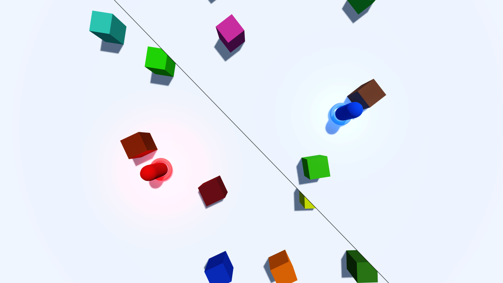
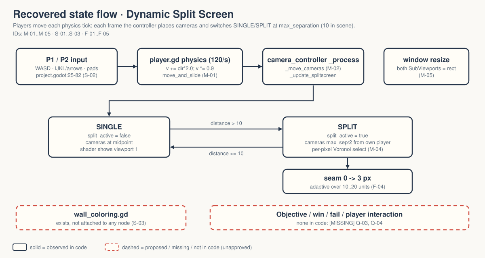

Two players walk apart; one screen becomes two along a line that follows them. There is movement and collision, but no goal.
OBSERVED in code INFERRED implied MISSING nobody has decided
Gate — unsigned at time of writing. Nothing here is approved. → GDD.md

OBSERVED shipped with the Godot demo (godot/README.md:48). No shader pixels inspected in Walker (FRICTIONAL.md:16).
MISSING Purpose in Walker, audience, demo-or-game, and — only if it becomes a game — what the two players do together. Q-01..Q-04.
Zelda: this is the demo people will want to "just add a goal" to. A goal is a vision decision; a person makes it.

Solid = code. Dashed = unattached script and the missing objective.
| ID | Behaviour | Tag |
|---|---|---|
| M-01 | Two players, X/Z only, v += dir×2, ×0.9 per tick (≈18 u/s steady) | OBSERVED INFERRED speed |
| M-02 | Cameras on the P1–P2 segment, top-down from y 10 | OBSERVED |
| M-03 | Split when X/Z distance > 10 (scene overrides script 20) | OBSERVED |
| M-04 | Shader picks a viewport per pixel; seam 0→3 px | OBSERVED |
| M-05 | SubViewports follow window size | OBSERVED |
3 of 10 CORE (movement, camera placement, split + shader). Under the 40% line.
F-09 random wall colouring: script exists, not attached. Q-08.
Q-01 purpose · Q-02 audience · Q-03 demo or game · Q-04 goal if game · Q-05 visual criteria · Q-06 film done · Q-07 CORE · Q-08 wall colouring · Q-09 pad device 0 · Q-10 feel
Zelda: first fix is T-07 — the split should flip because a person walked the players apart, not because a test teleported them. → decisions.md